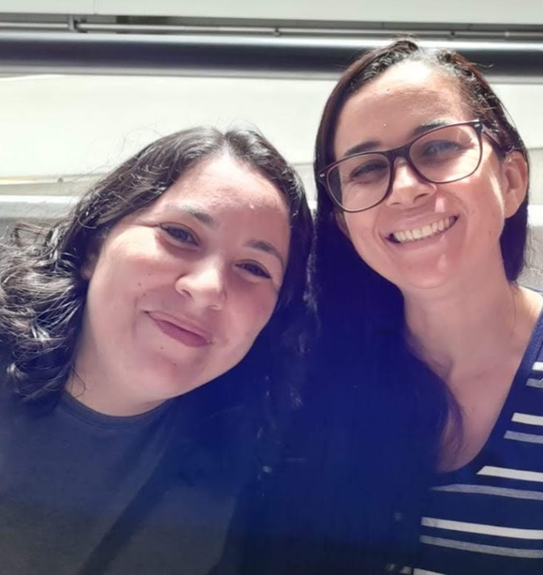

A razão pedagógica, a razão didática, está associada à aprendizagem do pensar, isto é, a ajudar os alunos se constituírem como sujeitos pensantes, capazes de pensar e lidar com conceitos, para argumentar, resolver problemas, para se defrontarem com dilemas e problemas da vida prática. Democracia na escola hoje, justiça social na educação, chama-se qualidade cognitiva e operativa do ensino.(LIBANÊO, 2002, p.26)

Foto das professoras no laboratório da UFABC.
Ouça o áudio, nele consta um pequeno relato da professora sobre a construção o eDB:
Veja um pouco de nossa escolha para o escudos heráldico: